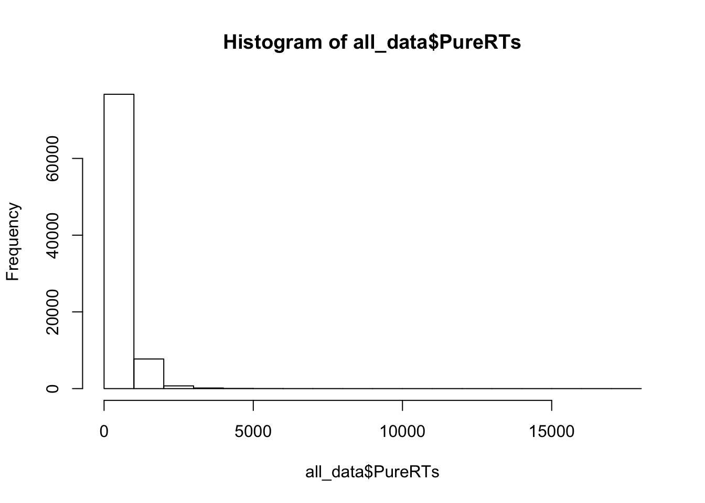
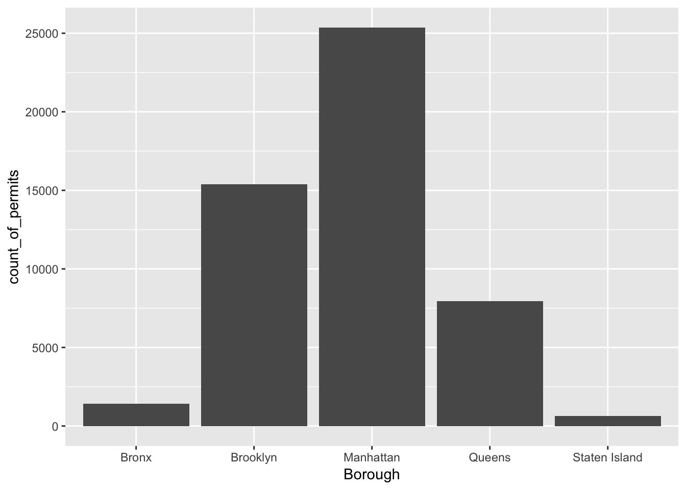
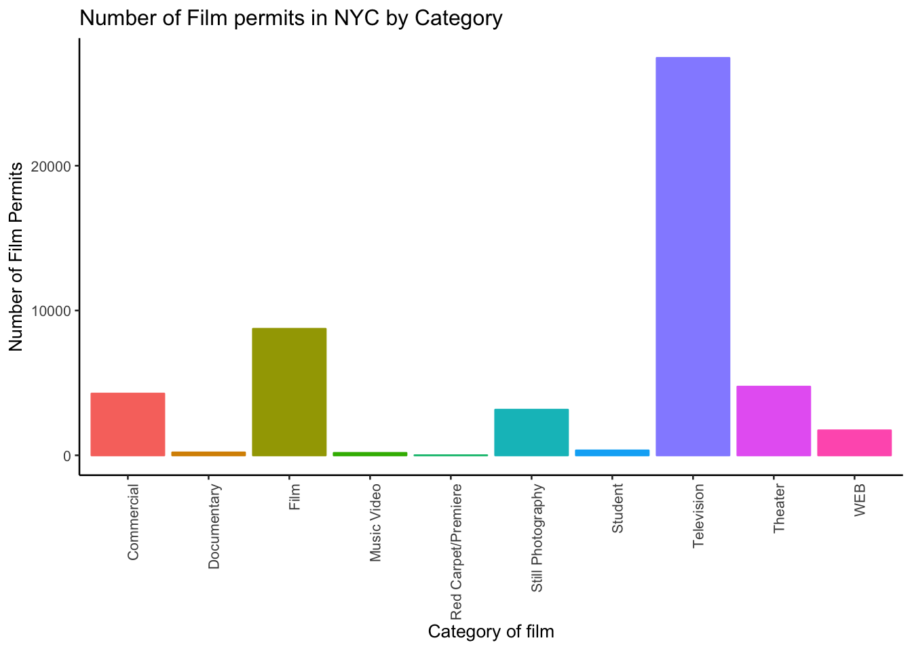

Chapter 4 Lab 4: Normal Distribution & Central Limit Theorem
Some inspiring quote —Inspiring Person
4.1 Outline of Problem to solve
- Distributions
- Sampling from distributions
- Sampling distribution of the mean
- Sampling statistics (statistics of many samples)
- Central limit theorem
- Normal Distribution
- z-scores
4.1.1 important things
Other things to say
4.2 R
This is one of two special labs where we don’t use too much real data. We will mostly fake everything. Yes, you will learn how to fake data in this course. Be a superhero, and only use these skills for good and not for evil.
As we progress through the course, you will learn how generating simulated data can be very useful to help you understand real data. In fact, I will say this right now. If you can’t simulate the data you expect to find, then you probably can’t understand the data that you do find very well. That’s a bold statement. It’s probably partly true.
4.2.1 Generating Numbers in R
There are many ways to make R generate numbers for you. In all of the case you get define how the numbers are generated. We’ll go through a few of the many ways.
4.2.1.1 sample
The sample function is like an endless gumball machine. You put the gumballs inside with different properties, say As and Bs, and then you let sample endlessly take gumballs out. Check it out:
gumballs <- c("A","B")
sample_of_gumballs <-sample(gumballs, 10, replace=TRUE)
sample_of_gumballs## [1] "B" "A" "B" "A" "A" "B" "A" "B" "B" "A"Here the sample function randomly picks A or B each time. We set it do this 10 times, so our sample has 10 things in it. We set replace=TRUE so that after each sample, we put the item back into the gumball machine and start again. Here’s another example with numbers
some_numbers <- c(1,2,3,4,5,5,5,5)
sample_of_numbers <-sample(some_numbers, 20, replace=TRUE)
sample_of_numbers## [1] 4 5 5 2 1 1 2 4 1 5 1 5 5 5 5 2 3 5 5 5Let’s do one more thing with sample. Let’s sample 1000 times from our some_numbers variable, and then look at the histogram
library(ggplot2)## Warning: package 'ggplot2' was built under R version 3.4.4some_numbers <- c(1,2,3,4,5,5,5,5)
sample_of_numbers <-sample(some_numbers, 1000, replace=TRUE)
hist(sample_of_numbers)
We are looking at lots of samples from our little gumball machine of numbers. We put more 5s in, and voila, more 5s come out of in our big sample of 1000.
4.2.1.2 runif uniform distribution
We can sample random numbers between any range using the runif(n, min=0, max = 1) function for the uniform distribution. We discussed this in the textbook. A uniform distribution is flat, and all the numbers between the min and max should occur roughly equally frequently. Let’s take 1000 random numbers between 0 and 1 and plot the histgram. We’ll just do it all in one line for speed.
hist(runif(1000,0,1))
This is histogram is flattish. Not perfectly flat, after all we only took 1000 samples. What if we took many more, say 10,000 total samples? Now it looks more flat, each bin is occuring about 500 times each, which is pretty close to the same amount.
hist(runif(10000,0,1))
4.2.1.3 rbinom the binomial distribution
The binomial distribution sounds like a scary word… binomial (AAGGGGHHHHH, stay away!). The binomial can be a coin flipping distribution. You use rbinom(n, size, prob). n gives the number of samples you want to take. We’ll keep size = 1 for now, it’s the number of trials (forget this for now, it’s more useful for more complicated things than what we are doing, if you want to know what it does, try it out, and see if you figure it out). prob is a little list you make of probabilities, that define how often certain things happen.
For example, consider flipping a coin. It will be heads or tails, and the coin, if it is fair, should have a 50% chance of being heads or tails. Here’s how we flip a coin 10 times using rbinom
coin_flips <- rbinom(10,1,.5)
coin_flips## [1] 0 1 0 1 0 0 0 0 1 1We get a bunch of 0s, and 1s. We can pretend 0 = tails, and 1 = heads. Great, now we can do coin flipping if we want. For example, if you flip 10 coins, how many heads do you get? We can can do the above again, and then sum(coin_flips). All the 1s are heads, so it will work out.
coin_flips <- rbinom(10,1,.5)
sum(coin_flips)## [1] 7Alright, so we get the sum, which tells us the number of heads. But, should we alwyas get that number of heads if we flipped a coin 10 times? If you keep redoing the above, you’ll get different answers. 5 heads will be the most frequent answer, but you will get lots of other answers too.
Hold on to your seats for this next one. With R, we can simulate the flipping of a coin 10 times (you already know that, you just did it), and we can do that over and over as many times as we want. For example, we could do it 100 times over, saving the number of heads for each set of 10 flips. Then we could look at the distribution of those sums. That would tell us about the range of things that can happen when we flip a coin 10 times. We can do that in loop like this:
save_number_of_heads<-length(1000) # make an empty variable to save things in
for(i in 1:1000){
save_number_of_heads[i] <- sum(rbinom(10,1,.5))
}
hist(save_number_of_heads)
See, that wasn’t too painful. Now we see another histrogram. The histogram shows us the frequency observing different numbers of heads (for 10 flips) across the 1000 simulations. 5 happens the most, but 2 happens sometimes, and so does 8. All of the possibilities seem to happen sometimes, some more than others.
4.2.1.4 rnorm the normal distribution
We’ll quickly show how to use rnorm(n, mean=0, sd=1) to sample numbers from a normal distribution. And, then we’ll come back to the normal distribution later, because it is so important.
hist(rnorm(10000,0,1))
There it is, a bell-shaped normal distribution with a mean of 0, and a standard deviation of 1. You’ve probably seen things like this before. Now you can sample numbers from normal distributions with any mean or standard deviation, just by changing those parts of the rnorm function.
4.2.1.5 mixing it up
The r functions are like Legos, you can put them together and come up with different things. What if wanted to sample from a distribution that looked like a two-humped camel’s back? Just sample from rnorm twice like this… mix away.
hist( c( rnorm(100,25,5), rnorm(100,50,5)) )
4.2.1.6 summary
You can generate as many numbers as your computer can handle with R. PSA: Don’t ask R to generate a bajillion numbers or it will explode (or more likely just crash, probably won’t explode, that’s a metaphor).
4.2.2 sampling distribution of the mean.
Remember the sampling distribution of the sample means from the textbook? Now, you will see the R code that made the graphs from before. As we’ve seen, we can take samples from distributions in R. We can take as many as we want. We can set our sample-size to be anything we want. And, we can take multiple samples of the same size as many times as we want.
4.2.2.1 Taking multiple samples of the same size
Let’s take 10 samples from a normal distribution (mean = 0, and sd = 1). Let’s set the sample-size for each to be 20. Then, we’ll put them all in a data frame and look at 10 different histrograms, one for each sample.
scores <- rnorm(10*20,0,1)
samples <- rep(1:10,each=20)
my_df <- data.frame(samples,scores)First, look at the new my_df dataframe. You can see there is a column with numbers 1 to 10, these are the sample names. There are also 20 scores for each inhe scores column. Let’s make histograms for each sample, so we can see what all of the samples look like:
ggplot(my_df, aes(x=scores))+
geom_histogram(color="white")+
facet_wrap(~samples)+
theme_classic()## `stat_bin()` using `bins = 30`. Pick better value with `binwidth`.
Notice, all of the samples do not have the same looking histogram. This is because of random sampling error. All of the samples are coming from the same normal distributions, but random chance makes each sample a little bit different (e.g., you don’t always get 5 heads and 5 tails when you flip a coin right)
4.2.2.2 Getting the means of the samples
Now, let’s look at the means of the samples, we will use dplyr to get the means for each sample, and put them in a table:
library(dplyr)##
## Attaching package: 'dplyr'## The following objects are masked from 'package:stats':
##
## filter, lag## The following objects are masked from 'package:base':
##
## intersect, setdiff, setequal, unionsample_means <- my_df %>%
group_by(samples) %>%
summarise(means=mean(scores))
knitr::kable(sample_means)| samples | means |
|---|---|
| 1 | -0.0510186 |
| 2 | 0.2950778 |
| 3 | -0.2372616 |
| 4 | -0.0274949 |
| 5 | -0.3032069 |
| 6 | 0.3336040 |
| 7 | -0.1264004 |
| 8 | -0.3179864 |
| 9 | -0.2387952 |
| 10 | -0.1898338 |
| So, those | are the means of our samples. What should the means be? Well, we would hope they are estimating the mean of the distribution they came from, which was 0. Notice, the numbers are all not 0, but they are kind of close to 0. |
#### histogram for the means of the samples
What if we now plot these 10 means (of each of the samples) in their own distribution?
ggplot(sample_means, aes(x=means))+
geom_histogram(color="white")+
theme_classic()## `stat_bin()` using `bins = 30`. Pick better value with `binwidth`.
That is the distribution of the sample means. It doesn’t look like much eh? That’s because we only took 10 samples right.
Notice one more thing…What is the mean of our 10 sample means? This is a mean of means. Remember that.
mean(sample_means$means)## [1] -0.0863316Well, that’s pretty close to zero. Which is good. When we average over our samples, they better estimate the mean of the distribution they came from.
4.2.2.3 simulating the distribution of sample means
Our histogram with 10 sample means looked kind of sad. Let’s give it some more friends. How about we repeat our little sampling experiment 1000 times.
Explain…We take 1000 samples. Each sample takes 20 scores from a normal distribution (mean=0, sd=1). Then we find the means of each sample (giving us 1000 sample means). Then, we plot that distribution.
# get 1000 samples with 20 scores each
scores <- rnorm(1000*20,0,1)
samples <- rep(1:1000,each=20)
my_df <- data.frame(samples,scores)
# get the means of the samples
sample_means <- my_df %>%
group_by(samples) %>%
summarise(means=mean(scores))
# make a histogram
ggplot(sample_means, aes(x=means))+
geom_histogram(color="white")+
theme_classic()## `stat_bin()` using `bins = 30`. Pick better value with `binwidth`.
There, that looks more like a sampling distribution of the sample means. Notice it’s properties. It is centered on 0, which tells us that sample means are mostly around zero. It is also bell-shaped, like the normal distribution it came from. It is also quite narrow. The numbers on the x-axis don’t go much past -.5 to +.5.
We will use things like the sampling distribution of the mean to make inferences about what chance can do in your data later on in this course.
4.2.3 Sampling distributions for any statistic
Just for fun here are some different sampling distributions for different statistics. We will take a normal distribution with mean = 100, and standard deviation =20. Then, we’ll take lots of samples with n = 50 (50 observations per sample). We’ll save all of the sample statistics, then plot their histograms. We do the sample means, standard deviations, maximum values, and medians. Let’s do it.
all_df<-data.frame()
for(i in 1:1000){
sample<-rnorm(50,100,20)
sample_mean<-mean(sample)
sample_sd<-sd(sample)
sample_max<-max(sample)
sample_median<-median(sample)
t_df<-data.frame(i,sample_mean,sample_sd,sample_max,sample_median)
all_df<-rbind(all_df,t_df)
}
library(ggpubr)## Loading required package: magrittra<-ggplot(all_df,aes(x=sample_mean))+
geom_histogram(color="white")+
theme_classic()
b<-ggplot(all_df,aes(x=sample_sd))+
geom_histogram(color="white")+
theme_classic()
c<-ggplot(all_df,aes(x=sample_max))+
geom_histogram(color="white")+
theme_classic()
d<-ggplot(all_df,aes(x=sample_median))+
geom_histogram(color="white")+
theme_classic()
ggarrange(a,b,c,d,
ncol = 2, nrow = 2)## `stat_bin()` using `bins = 30`. Pick better value with `binwidth`.## `stat_bin()` using `bins = 30`. Pick better value with `binwidth`.
## `stat_bin()` using `bins = 30`. Pick better value with `binwidth`.
## `stat_bin()` using `bins = 30`. Pick better value with `binwidth`.
From reading the textbook and attending lecture, you should be able to start thinking about why these sampling statitistic distributions might be useful…For now, just know that you can make a sampling statistic for pretty much anythin in R, just by simulating the process of sampling, measuring the statistic, doing it over a bunch, and then plotting the histogram. This gives you a pretty good estimate of the distribution for that sampling statistic.
4.2.4 Central limit theorem
We have been building you up for the central limit theorem, described in the textbook and in class. The central limit theorem is basically that the distribution of sample means will be a normal curve. We already saw that before. But, the interesting thing about it, is that the distribution of your sample means will be normal, even if the distribution the samples came from is not normal. Huh what?
To demonstrat this the next bit of code is modified from what we did ealier. We create 100 samples. Each sample has 1000 observations. All of them come from a uniform distribution between 0 to 1. This means all of the numbers between 0 and 1 should occur equally frequently. Below I plot histrograms for the first 10 samples (out of the 100 total, 100 is too many to look at). Notice the histograms are not normal, they are roughly flat.
scores <- runif(100*1000,0,1)
samples <- rep(1:100,each=1000)
my_df <- data.frame(samples,scores)
ggplot(my_df[1:(10*1000),], aes(x=scores))+
geom_histogram(color="white", bins=10)+
facet_wrap(~samples)+
theme_classic()+
ylim(0,200)
We took samples from a flat uniform distribution, and the samples themselves look like that same flat distribution.
HOWEVER, if we now do the next step, and compute the means of each of our 100 samples, we could then look at the sampling distribution of the sample means. Let’s do that:
sample_means <- my_df %>%
group_by(samples) %>%
summarise(means=mean(scores))
# make a histogram
ggplot(sample_means, aes(x=means))+
geom_histogram(color="white", bins=15)+
theme_classic()
As you can see, the sampling distribution of the sample means is not flat. It’s shaped kind of normalish. If we had taken many more samples, found their means, and then looked at a histogram, it would become even more normal looking. Because that’s what happens according to the central limit theorem.
4.2.5 The normal distribution
“Why does any of this matter, why are we doing this, can we stop now!!!!!! PLEEEEAASSEE, somebody HELP”.
We are basically just repeating what was said in the textbook, and the lecture, so that you get the concept explained in a bunch of different ways. It will sink in.
The reason the central limit theorem is important, is because researchers often take many samples, then analyse the means of their samples. That’s what they do.
An experiment might have 20 people. You might take 20 measurements from each person. That’s taking 20 samples. Then, because we know that samples are noisy. We take the means of the samples.
So, what researchers are often looking at, (and you too, very soon) are means of samples. Not just the samples. And, now we know that means of samples (if we had a lot of samples), look like they are distributed normally (the central limit theorem says the should be).
We can use this knowledge. If we learn a little bit more about normal distributions, and how they behave and work, we can take that and use it to understand our sample means better. This will become more clear as head into the topic of statistical inference next week. This is all a build up for that.
To continue the build-up we now look at some more properties of the normal distribution.
4.2.5.1 Graphing the normal distribution
“Wait, I thought we alread did that”. We sort of did. We sampled numbers and made histograms that looked like normal distributions. But, a “normal distribution” is more of an abstract idea. It looks like this in the abstract:
normal_dist <- dnorm(seq(-4,4,.1), 0, 1)
values <-seq(-4,4,.1)
normal_df <-data.frame(values,normal_dist)
ggplot(normal_df, aes(x=values,y=normal_dist))+
geom_line()+
theme_classic()
A really nice shaped bell-like thing. This normal distribution has a mean of 0, and standard deviation of 1. The heights of the lines tell you roughly how likely each value is. Notice, it is centered on 0 (most likely that numbers from this distributino will be near 0), and it goes down as numbers get bigger or smaller (so bigger or smaller numbers get less likely). There is a range to it. Notice the values don’t go much beyond -4 and +4. This because those values don’t happen very often. Theoretically any value could happen, but really big or small values have really low probabilites.
4.2.5.2 calculating the probability of specific ranges.
We can use R to tell us about the probability of getting numbers in a certain range. For example, when you think about. It should be obvious that you have a 50% probability of getting the number 0 or greater. Half of the distribution is 0 or greater, so you have a 50% probability.
We can use the pnorm function to confirm this:
pnorm(0, mean = 0, sd= 1, lower.tail=FALSE)## [1] 0.5Agreed, pnorm tells us the probability of getting 0 or greater is .5.
Well, what is the probability of getting a 2 or greater? That’s a bit harder to judge, obviously less than 50%. Use R like this to find out:
pnorm(2, mean = 0, sd= 1, lower.tail=FALSE)## [1] 0.02275013The probability of getting a 2 or greater is .0227 (not very probable)
What is the probability of getting a score between -1 and 1?
ps<-pnorm(c(-1,1), mean = 0, sd= 1, lower.tail=FALSE)
ps[1]-ps[2]## [1] 0.6826895About 68%. About 68% of all the numbers would be between -1 and 1. So naturally, about 34% of the numbers would be between 0 and 1. Notice, we are just getting a feeling for this, you’ll see why in a bit when we do z-scores (some of you may realize we are already doing that…)
What about the numbers between 1 and 2?
ps<-pnorm(c(1,2), mean = 0, sd= 1, lower.tail=FALSE)
ps[1]-ps[2]## [1] 0.1359051About 13.5% of numbers fall in that range, not much.
How about between 2 and 3?
ps<-pnorm(c(2,3), mean = 0, sd= 1, lower.tail=FALSE)
ps[1]-ps[2]## [1] 0.02140023Again a very small amount, only 2.1 % of the numbers, not a alot.
4.2.5.3 summary pnorm
You can always use pnorm to figure how the probabilities of getting certain values from any normal distribution. That’s great.
4.2.6 z-scores
We just spent a bunch of time looking at a very special normal distribution, the one where the mean = 0, and the standard deviation = 1. Then we got a little bit comfortable with what those numbers mean. 0 happens a lot. Numbers between -1 and 1 happen alot. Numbers bigger or smaller than 1 also happen fairly often, but less often. Number bigger than 2 don’t happen alot, numbers bigger than 3 don’t happen hardly at all.
We can use this knowledge for our convenience. Often, we are not dealing with numbers exactly like these. For example, someone might say, I got a number, it’s 550. It came from a distribution with mean = 600, and standard deviation = 25. So, does 545 happen alot or not? The numbers dont’ tell you right away.
If we were talking about our handy distribution with mean = 0 and standard deviation = 1, and I told I got a number 4.5 from that distribution. You would automatically know that 4.5 doesn’t happen a lot. Right? Right!
z-scores are a way of transforming one set of numbers into our neato normal distribution, with mean = 0 and standard deviation = 1.
Here’s a simple example, like what we said in the textbook. If you have a normal distribution with mean = 550, and standard deviation 25, then how far from the mean is the number 575? It’s a whole 25 away (550+25 = 575). How many standard deviations is that? It’s 1 whole standard deviation. So does a number like 575 happen a lot? Well, based on what you know about normal distributions, 1 standard deviation of the mean isn’t that far, and it does happen fairly often. This is what we are doing here.
4.2.6.1 Calculating z-scores
- get some numbers
some_numbers <- rnorm(20,50,25)- Calculate the mean and standard deviation
my_mean <- mean(some_numbers)
my_sd <-sd(some_numbers)
print(my_mean)## [1] 41.92338print(my_sd)## [1] 14.3494- subtract the mean from your numbers
differences<-some_numbers-my_mean
print(my_sd)## [1] 14.3494- divide by the standard deviation
z_scores<-differences/my_sd
print(z_scores)## [1] -0.64099895 -1.02646884 0.54293597 1.51034744 -0.75001359
## [6] -0.98774635 -0.09230817 -0.87531736 -1.82183837 0.55426161
## [11] -1.11222106 1.86512428 -0.08378173 0.21541249 -0.55946271
## [16] -0.38812275 0.82899255 1.48644404 0.67308435 0.66167715Done. Now you have converted your original numbers into what we call standardized scores. They are standardized to have the same properties (assumed properties) as a normal distribution with mean = 0, and sd = 1.
You could look at each of your original scores, and try to figure out if they are likely or unlikely numbers. But, if you make them into z-scores, then you can tell right away. Numbers close to 0 happen alot, bigger numbers closer to 1 happen less often, but still fairly often, and number bigger than 2 or 3 hardly happen at all.
If someone said they did 3 standard deviations above the mean on a test, this means they did really good, and hardly nobody also did that good.
Z-scores are a useful language once you understand them. We show you this language in case you find them useful.
4.2.7 Generalization Exercise
Complete the generalization exercise described in your R Markdown document for this lab.
4.2.8 Writing asignment
Complete the writing assignment described in your R Markdown document for this lab. When you have finished everything. Knit the document and hand in your stuff (you can submit your .RMD file to blackboard if it does not knit.)
4.3 Excel
How to do it in Excel
4.4 SPSS
How to do it in SPSS
4.5 Matlab
How to do it in Matlab